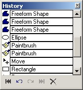

History Window
|
 The History Window is the primary source for "Undoing" and "Redoing" actions that have occurred on the active layer. The operation of this window is simple. With each action you perform on the canvas (i.e., drawing with a pencil), data about that action is stored for possible undoing and redoing. Once this data is stored, an entry is made into the History Window. These entries are stacked upon each other in the order in which they were performed. The user can then click wherever they would like in the History Window to undo and redo performed actions. The user may also opt to use the other functionality of the History Window. Such functionality includes the two arrows at the bottom left of the window. The first button performs the undo action one entry at a time. The other arrow redos one action at a time. There are also the rewind and fast forward buttons. Use these buttons if you want to undo and redo the entire History Window. Lastly, the button marked with the X clears out the entire history window. This maybe useful to conserve memory and increase the operating speed of the History Window. This window is closeable and moveable. If it is not currently on the screen, you can display it using the menu bar option Window-->History. The undo action may also be performed using the menu bar under Edit and clicking Undo. |